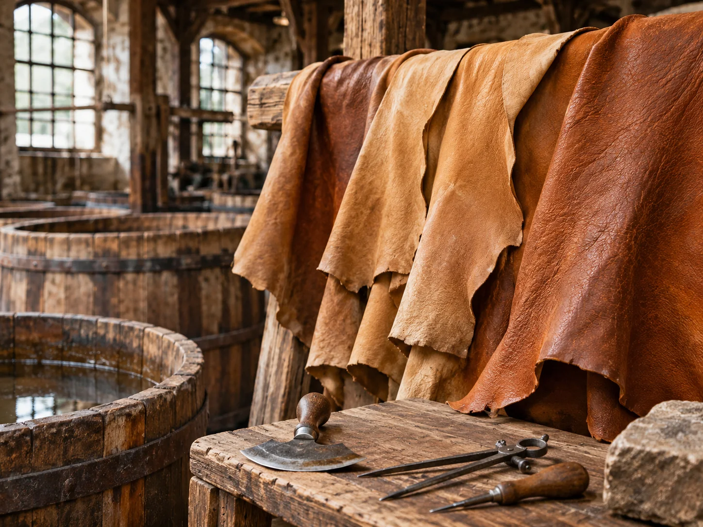

Annehmen und konservieren
Häute kamen von Schlachtbetrieben oder über Händler. Bis zur Verarbeitung mussten sie vor Fäulnis geschützt werden, etwa durch Salzen oder Trocknen. Schäden an der Rohhaut liessen sich später kaum ausgleichen.
GESTERN · HANDWERK · ARBEITSWELT · INDUSTRIALISIERUNG
Lange bevor moderne Gerbfässer und industrielle Chemie den Produktionsablauf beschleunigten, entstand Leder in aufeinanderfolgenden Arbeitsgängen. Die Arbeit war körperlich, wasserintensiv und erforderte Erfahrung: Eine Tierhaut musste zunächst gereinigt, enthaart, vorbereitet und dann mit pflanzlichen Gerbstoffen dauerhaft verändert werden.
Diese Seite rekonstruiert typische Verfahren der historischen Rotgerberei und ordnet den Wandel im 19. Jahrhundert ein. Wo wir auf die Firma Gebrüder Krafft in Fahrnau eingehen, unterscheiden wir ausdrücklich zwischen belegten Firmendaten und allgemeinen Beschreibungen des Gewerbes.

01 · MATERIAL UND WISSEN
Eine unbehandelte Tierhaut besteht unter anderem aus einem Geflecht von Kollagenfasern. Feuchtigkeit, Wärme und Mikroorganismen lassen sie verderben. Durch Gerbung wird dieses Fasergefüge chemisch und physikalisch stabilisiert. Leder bleibt dadurch bei geeigneter Verarbeitung und Pflege nutzbar, wo rohe Haut verhärten oder zerfallen würde.
Der Name Rotgerberei bezeichnet historisch die vor allem pflanzliche Gerbung, häufig von stärkeren Rindshäuten für Sohlen-, Riemen- und andere feste Leder. Der Begriff ist nicht mit einer einheitlichen Rezeptur gleichzusetzen: Die Verfahren unterschieden sich nach Ort, Zeit, Rohhaut, gewünschtem Produkt und Betriebsgrösse. Daneben existierten beispielsweise Weissgerberei und Sämischgerberei mit anderen Verfahrensweisen.
 Illustration, keine historische Quellenabbildung.
Illustration, keine historische Quellenabbildung.Als Lohe bezeichnete man insbesondere zerkleinerte gerbstoffhaltige Rinde. Eichenrinde spielte in Mitteleuropa eine grosse Rolle. Auch andere Rinden und Hölzer konnten Gerbstoffe liefern. Die wasserlöslichen pflanzlichen Tannine gelangten über die Gerbflüssigkeit in die Haut und wechselwirkten mit deren Kollagen.
Für den Betrieb war die Qualität des Gerbmaterials wichtig: Herkunft, Lagerung, Zerkleinerung und Auslaugung beeinflussten die Wirksamkeit. Die Beschaffung von Lohe verband Gerbereien mit Waldwirtschaft, Handel und Transport.
„Pflanzlich gegerbt“ bedeutet nicht, dass die gesamte Herstellung ohne weitere Hilfsstoffe oder Umweltbelastungen ablief. Schon historische Gerbereien benötigten grosse Wassermengen und erzeugten belastete Reststoffe.
02 · DER HISTORISCHE PRODUKTIONSWEG
Die Reihenfolge und die Dauer einzelner Schritte variierten. Die folgende Übersicht beschreibt einen typischen Ablauf der traditionellen pflanzlichen Gerbung, nicht den nachgewiesenen Arbeitsplan einer bestimmten Gerberei.
Häute kamen von Schlachtbetrieben oder über Händler. Bis zur Verarbeitung mussten sie vor Fäulnis geschützt werden, etwa durch Salzen oder Trocknen. Schäden an der Rohhaut liessen sich später kaum ausgleichen.
Durch Einweichen wurden anhaftender Schmutz, Salz und lösliche Bestandteile entfernt. Die Haut nahm wieder Feuchtigkeit auf. Wasserläufe oder Brunnen waren deshalb für viele Gerbereistandorte wichtig.
Mit alkalischen Behandlungen, später verbreitet auch mit Kalk, wurde die Haarentfernung vorbereitet. Ältere Methoden konnten andere Hilfsmittel nutzen. Die konkrete Mischung hing von Zeit und Werkstatt ab.
Auf dem Gerberbaum wurden Haare, Oberhautreste und Fleischgewebe mit geeigneten Messern abgeschabt. Der Gerber musste die Haut gründlich bearbeiten, ohne die wertvolle Narbenschicht zu verletzen.
Vor der Gerbung mussten unerwünschte Rückstände entfernt und die Faserstruktur passend vorbereitet werden. Historische Beizverfahren konnten organische, hygienisch problematische Stoffe einsetzen; später kamen kontrollierbarere Verfahren auf.
Häute wurden schrittweise mit Gerbstofflösungen behandelt. Je nach Lederart folgten Gerbgruben mit Lohe und unterschiedlich starken Brühen. Das langsame Eindringen der Tannine war entscheidend für eine möglichst gleichmässige Durchgerbung.
Nach der Gerbung wurden die Häute entwässert und kontrolliert getrocknet. Zu rasches oder ungleichmässiges Trocknen konnte zu Verformungen und Qualitätsverlust führen.
Je nach späterem Gebrauch wurde Leder gestreckt, geglättet, gefettet, verdichtet oder anderweitig zugerichtet. Erst dadurch erhielt es die Eigenschaften, die für Schuhe, Riemen oder weitere Waren erforderlich waren.
03 · HERZSTÜCK DER ROTGERBEREI
Die Grube war mehr als ein Behälter. Sie war Teil eines abgestuften Systems von Gerbflüssigkeiten, Rindenmaterial und Lagerzeiten. In einer traditionellen Gerberei konnten Häute zunächst in schwächere Gerbbrühen gelangen und später stärkerer Einwirkung ausgesetzt werden. Bei schweren Ledern dauerte die Grubengerbung häufig viele Monate; je nach Epoche, Material und Verfahren konnte sie auch deutlich kürzer oder länger ausfallen.
Schematische Darstellung eines möglichen historischen Arbeitsprinzips. Sie ist weder eine technische Bauzeichnung noch eine Rekonstruktion der Gruben bei Krafft.
Gerbstoffe mussten die Haut bis in tiefere Schichten durchdringen. Bei dicken Häuten erforderte das Geduld und abgestufte Behandlung, damit die Oberfläche nicht zu früh stark gegerbt wurde, während das Innere noch unzureichend erreicht war.
Rinde musste gewonnen, getrocknet, transportiert, gelagert und zerkleinert werden. Gerbstoffgehalt und Qualität schwankten. Der Verbrauch beeinflusste Kosten und Versorgungssicherheit.
Rohhaut, Sauberkeit der Vorbehandlung, Stärke der Gerbbrühen, Zeit, Temperatur und sorgfältige Zurichtung wirkten zusammen. Auch Erfahrung und regelmässige Kontrolle waren unverzichtbar.
04 · MENSCHEN UND ARBEITSUMGEBUNG
Wer eine Gerberei betrat, traf auf feuchte Arbeitsräume, schwere Häute, hölzerne Bottiche oder Gruben, Gerberbäume, Messer, Wasser und den Geruch organischer Rohstoffe. Das Heben und Wenden nasser Häute beanspruchte Kraft; scharfe Werkzeuge, glatte Böden und belastete Flüssigkeiten bargen Risiken.
Die Arbeit erforderte zugleich Fachkenntnis. Gerber mussten beurteilen, ob eine Haut richtig vorbereitet war, ob die Brühe noch ausreichend wirkte und wann ein Leder weiterverarbeitet werden konnte. Handwerkliches Wissen wurde durch Lehre und tägliche Erfahrung weitergegeben.
Gerberbaum, Schabmesser, Ziehmesser, Haken und einfache Transporthilfen prägten den Arbeitsalltag. Mit der Mechanisierung übernahmen Maschinen zunehmend einzelne anstrengende Arbeitsgänge.
Waschwasser, Haar- und Fleischreste sowie ausgelaugte Gerbmaterialien mussten entsorgt oder weiterverwendet werden. Gewässerschutz nach heutigen Massstäben bestand nicht; die Belastungen waren lokal unterschiedlich.
In grösseren Betrieben konnten Vorbereitung, Gerbung, Zurichtung, Lagerung und Versand arbeitsteilig organisiert werden. In kleineren Werkstätten übernahmen wenige Personen mehrere Schritte.
Die traditionelle Gerberei war ein anspruchsvolles Handwerk, aber kein romantischer Ort. Harte körperliche Arbeit und die Umweltfolgen gehören ebenso zur Geschichte wie Erfahrung, Geschick und technische Erfindung.
05 · VOM HANDWERK ZUR INDUSTRIE
Industrialisierung bedeutete zunächst oft eine Kombination aus traditionellen Gerbgruben und neuen Maschinen. Mechanische Bearbeitung, verbesserte Pumpen, Gerbextrakte und grössere Produktionsmengen veränderten den Betrieb. Die Grubengerbung blieb mancherorts erhalten, während andere Arbeitsschritte schneller und gleichmässiger wurden.
| Bereich | Traditionelle Praxis | Industrieller Wandel |
|---|---|---|
| Gerbmittel | Vor allem örtlich oder über Handel beschaffte Rindenlohe | Zunehmend standardisierte, konzentrierte Gerbextrakte |
| Hautbearbeitung | Schaben und Bearbeiten mit Handwerkzeugen | Maschinen für einzelne mechanische Arbeitsschritte |
| Gerbung | Brühen und Gruben, teils lange Lagerzeiten | Versuche mit bewegten Behältern und später schnelleren Verfahren |
| Organisation | Kleinere Werkstätten, Erfahrung des Gerbers | Grössere Anlagen, Arbeitsteilung, Kontrolle und Absatzmärkte |
| Produkte | Je nach Region und Betrieb unterschiedliche Lederarten | Zunehmende Spezialisierung und Verbindung mit weiterverarbeitenden Fabriken |
Gegen Ende des 19. Jahrhunderts verbreitete sich die mineralische Chromgerbung. Sie eröffnete andere Produktionsmöglichkeiten und trug langfristig zur Veränderung der Lederindustrie bei. Sie ersetzte die pflanzliche Gerbung jedoch nicht vollständig: Für bestimmte Lederarten und Anforderungen blieb diese wichtig.
06 · REGIONALBEISPIEL FAHRNAU
Die Geschichte der Firma Krafft zeigt, wie sich ein Gerbereistandort über Generationen verändern konnte. Für Fahrnau wird eine Rotgerberei von Johann Nikolaus Flury im Jahr 1773 genannt. 1854 nahm Wilhelm Krafft den Betrieb wieder auf. Daraus entwickelte sich später ein Unternehmen, das nicht nur Leder erzeugte, sondern auch Lederwaren und Schuhe herstellte.
Die überlieferte Firmengeschichte nennt Versuche mit der Fassgerbung 1882, die zunächst nicht zum gewünschten Erfolg führten, und eine spätere Wiederaufnahme entsprechender Entwicklungen. Die Chromgerbung wurde 1896 eingeführt. Solche Daten zeigen, dass sich neue Verfahren nicht in einem einzigen Schritt durchsetzten.
 Historische Krafft-Aufnahme aus dem Projektbestand; genaue Bildzuordnung und Datierung anhand der Originalquelle prüfen.
Historische Krafft-Aufnahme aus dem Projektbestand; genaue Bildzuordnung und Datierung anhand der Originalquelle prüfen.Die überlieferten Firmenangaben und historischen Aufnahmen belegen die Entwicklung eines industriellen Lederbetriebs. Sie erlauben aber nicht ohne Weiteres, jede einzelne Gerbgrube, jeden Handgriff oder jede Rezeptur für die Zeit ab 1854 exakt zu rekonstruieren.
Die allgemeinen Abschnitte dieser Seite erläutern deshalb die historische Rotgerberei. Für die spezifischen Verfahren und technischen Veränderungen bei Krafft gibt es eine eigene Unterseite.
Frühe Rotgerberei am Standort Fahrnau unter Johann Nikolaus Flury.
Wiederaufnahme des Gerbereibetriebs durch Wilhelm Krafft.
Überlieferte, zunächst erfolglose Versuche mit der Fassgerbung.
Einführung der Chromgerbung laut Firmengeschichte.
Die Jahreszahlen beruhen auf der historischen Unternehmensüberlieferung, insbesondere der Jubiläumsschrift von 1929. Eine Firmenschrift ist eine wichtige Quelle, aber zugleich eine Selbstdarstellung; Aussagen sollten, wo möglich, mit unabhängigen Unterlagen abgeglichen werden.
07 · QUELLEN UND EINORDNUNG
Für die Krafft-Chronologie ist die historische Jubiläumsschrift Gebrüder Krafft, Leder- und Lederwarenfabrik Fahrnau (Baden), 1854–1929 eine zentrale Grundlage. Die allgemeinen Erklärungen zur Gerbereitechnik sind eine zusammenfassende Darstellung historischer Verfahren; sie dürfen nicht als wörtliche Wiedergabe der Krafft-Schrift verstanden werden.
Für weiterführende Quellenarbeit eignen sich zeitgenössische gerbereitechnische Lehrbücher, historische Gewerbe- und Fabrikbeschreibungen sowie erhaltene Produktionsbilder. Technische Begriffe, Rezepturen und Abläufe können sich zwischen Regionen und Jahrzehnten erheblich unterscheiden.
Die grosse Einstiegsillustration ist eine moderne Darstellung. Die historische Fotografie im Krafft-Abschnitt stammt aus dem Projektbestand. Bildlegenden sind bewusst vorsichtig gehalten, solange Aufnahmeort, Jahr und dargestellter Arbeitsgang nicht anhand des Originals abschliessend überprüft sind.
Zur Quellenübersicht → · Weiterlesen: Lederherstellung heute →